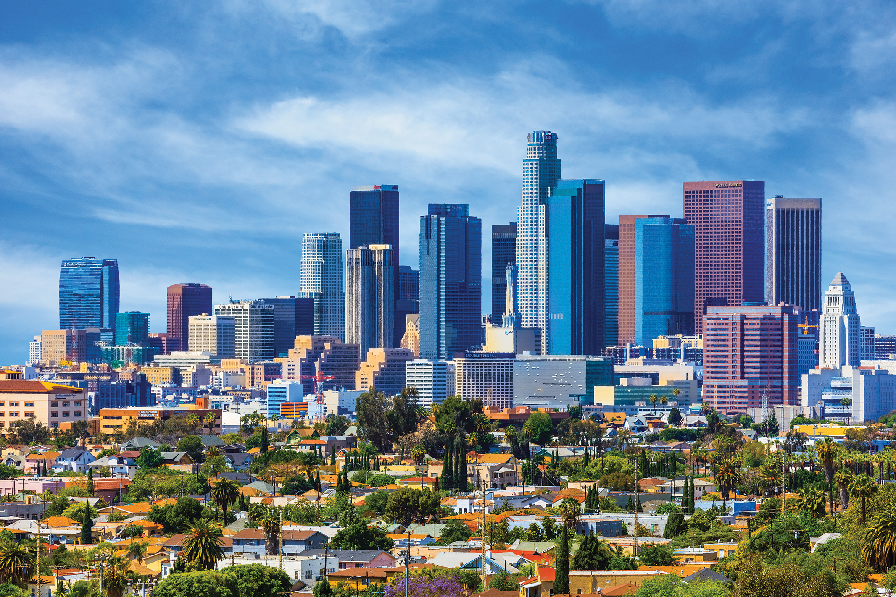
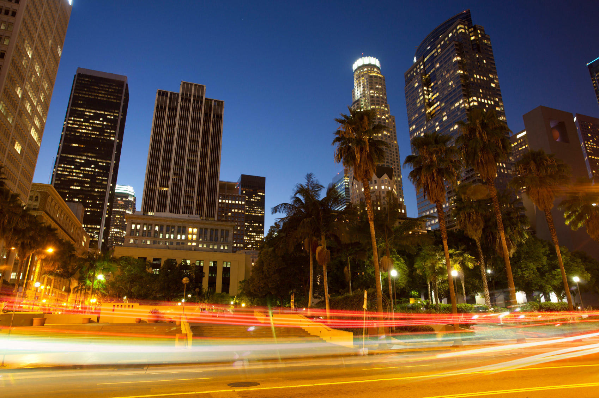
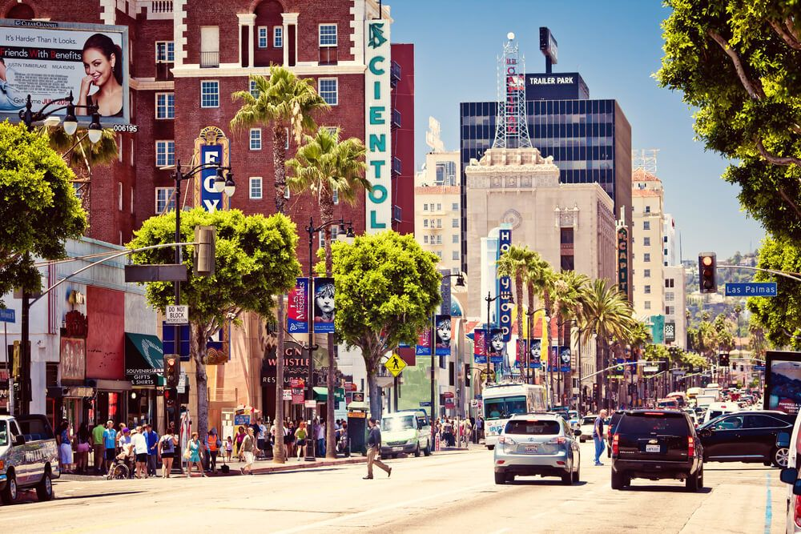
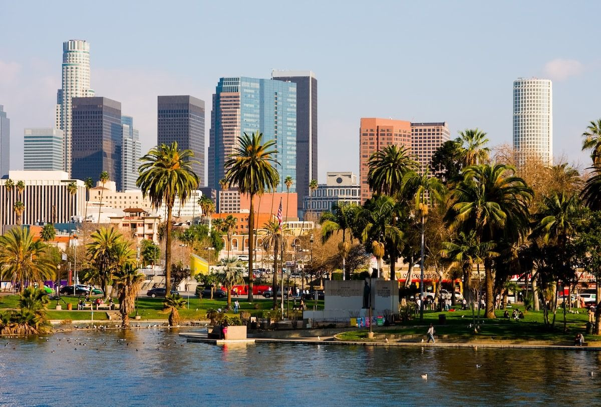
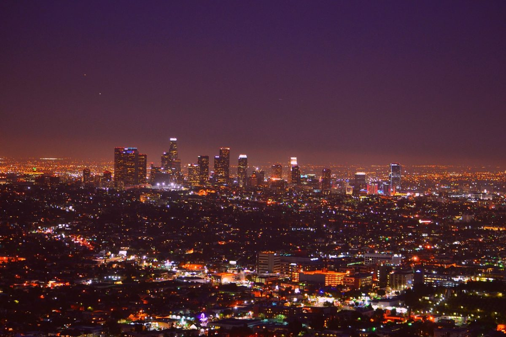

Лос-Анджелес, известный как “Город ангелов”, является вторым по численности населения городом в США и центром американской киноиндустрии. Этот мегаполис на тихоокеанском побережье Калифорнии славится своим разнообразием, от шумных улиц Голливуда до тихих пляжей Малибу. Голливуд - сердце киномира, где снимаются блокбастеры, проходят церемонии вручения премий “Оскар” и “Золотой глобус”. Бесконечные песчаные пляжи с теплыми водами привлекают серферов, любителей загара и просто желающих насладиться красотой океана.В Лос-Анджелесе проживают представители более 140 национальностей, что делает город настоящим melting pot культур. От Музея современного искусства до Музея Гетти - в Лос-Анджелесе есть музеи на любой вкус, а также множество галерей, театров и концертных залов. Город предлагает широкий выбор кулинарных изысков, от уличной еды до мишленовских ресторанов. К главным достопримечательностям относятся Голливудский бульвар с “Аллеей славы”, Голливудский знак, Музей кино, Беверли-Хиллз, Мариенбад, пляж Санта-Моники, Малабо и Диснейленд. В Лос-Анджелес можно добраться самолетом (Международный аэропорт Лос-Анджелеса - LAX), автомобилем или поездом (Amtrak). Лос-Анджелес - огромный город, поэтому перед поездкой стоит спланировать маршрут. Используйте общественный транспорт, чтобы сэкономить время и деньги. Учитывайте пробки, особенно в час пик. Не забудьте взять солнцезащитный крем и шляпу. Не бойтесь попробовать уличную еду, она здесь вкусная и разнообразная. Лос-Анджелес - город, который не даст вам заскучать. Здесь каждый найдет что-то для себя, от любителей кино и музыки до гурманов и любителей природы.
    
Последние события города
Один человек скончался в больнице от пулевых ранений в результате захвата автобуса в Лос-Анджелесе, сообщает телеканал Fox News со ссылкой на полицию. "Подозреваемый застрелил пассажира автобуса (компании - ред.) MTA в Лос-Анджелесе в начале среды перед тем, как захватил транспортное средство и вовлек полицию в погоню длительностью более часа, затем он был задержан командой спецназа... Пострадавший был доставлен в ближайшую больницу в критическом состоянии, но позднее скончался", - говорится в публикации на сайте телеканала со ссылкой на местный полицейский департамент. Отмечается, что полиция получила звонок о стрельбе и захвате транспортного средства около 00.45 (10.45 мск). Подозреваемый выстрелил по меньшей мере в одного человека, затем направил оружие в сторону водителя и заставил его вести автобус на север.